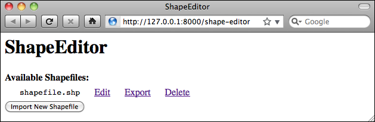

实现“列出 Shapefile”视图#
Implementing the “list shapefiles” view
当用户首次打开 ShapeEditor 应用程序时，我们希望他们看到一个已上传的 Shapefile 列表，并提供“导入”、“编辑”、“导出”和“删除”选项。让我们构建这个列表视图，它将作为整个 ShapeEditor 应用程序的起点。
这个视图将作为“editor”应用的一部分，因此我们首先需要在 Django 项目中创建这个应用程序。为此，进入 shapeEditor 项目的目录，并输入以下命令:
python manage.py startapp editor
像往常一样，Django 会将应用程序放置在顶级目录中，使其成为一个可重用的应用程序。我们需要将其移动到 shapeEditor 目录中，使其成为特定于我们项目的应用程序。可以手动移动目录，或者使用以下终端命令:
mv editor shapeEditor
现在我们需要将新的应用程序添加到项目中。编辑 settings.py 模块，并在 INSTALLED_APPS 列表的末尾添加以下行:
'shapeEditor.editor',
因为编辑器将支持多个 URL，所以我们需要为编辑器提供自己的 URLConf 模块。为此，在 shapeEditor/editor 目录中创建一个名为 urls.py 的新文件，并在文件中输入以下内容:
# shapeEditor.editor 应用程序的 URLConf。
from django.conf.urls import patterns, url
urlpatterns = patterns('shapeEditor.editor.views',
url(r'^$', 'list_shapefiles'),
)
这个 URLConf 将处理编辑器应用程序的所有 URL。目前我们只有一个条目，它将顶级 URL（使用正则表达式 r’^$’ 定义，匹配空字符串）映射到 list_shapefiles() 视图函数。
接下来，我们需要编辑顶级 urls.py 模块，以便将编辑器应用程序的 URL 包含在项目中。将顶级 urls.py 模块（位于 shapeEditor/urls.py）更改为如下所示:
from django.conf.urls.defaults import patterns, include, url
from django.contrib.gis import admin
admin.autodiscover()
urlpatterns = patterns('',
url(r'^editor/', include('shapeEditor.editor.urls')),
)
urlpatterns += patterns('',
url(r'^admin/', include(admin.site.urls)),
)
注意，我们现在有了两组独立的 URL 模式，一组将所有 shapeEditor.editor 应用程序的视图放入 /editor URL，另一组将 django.contrib.gis.admin 应用程序的视图放入 /admin URL。这是将项目的 URL 拆分为多个部分的一种非常方便的方式，使每个应用程序在 URL 命名空间中都有自己的部分。
现在我们已经设置好了 URL，让我们编写与之配套的视图。我们将首先创建一个非常简单的 list_shapefiles() 视图实现，以确保它能正常工作。打开编辑器目录中的 views.py 模块，并将此文件更改为如下所示:
from django.http import HttpResponse
def list_shapefiles(request):
return HttpResponse("in list_shapefiles")
如果服务器没有运行，启动 GeoDjango web 服务器。为此，打开命令行窗口，进入 GeoDjango 项目目录，并输入以下命令:
python manage.py runserver
然后打开您的 Web 浏览器，并导航到以下 URL：
如果一切正常，您应该会在网页上看到 list_shapefiles。这表示您已经成功创建了 list_shapefiles() 视图函数，并正确设置了 URLConf 映射，以指向这个视图。
接下来，我们要创建显示 Shapefile 列表的视图。为此，我们将使用 Django 模板。再次编辑 views.py 模块，将此模块的内容更改为如下所示:
from django.http import HttpResponse
from django.shortcuts import render
from shapeEditor.shared.models import Shapefile
def list_shapefiles(request):
shapefiles = Shapefile.objects.all().order_by("filename")
return render(request, "list_shapefiles.html",
{'shapefiles' : shapefiles})
list_shapefiles() 视图函数现在执行两件事：
它从数据库加载所有 Shapefile 对象，并按文件名排序
它将这个列表传递给 Django 模板（在 list_shapefiles.html 文件中），该模板渲染为 HTML 网页，并返回给调用者
现在，让我们继续创建 list_shapefiles.html 模板。在编辑器目录中创建一个名为 templates 的目录，并在该目录中创建一个名为 list_shapefiles.html 的新文件。该文件应包含以下内容：
<html>
<head>
<title>ShapeEditor</title>
</head>
<body>
<h1>ShapeEditor</h1>
{% if shapefiles %}
<b>Available Shapefiles:</b>
<table border="0" cellspacing="0" cellpadding="5"
style="padding-left:20px">
{% for shapefile in shapefiles %}
<tr>
<td>
<span style="font-family:monospace">{{ shapefile.filename
}}</span>
</td>
<td> </td>
<td>
<a href="/editor/edit/{{ shapefile.id }}">
Edit
</a>
</td>
<td> </td>
<td>
<a href="/editor/export/{{ shapefile.id }}">
Export
</a>
</td>
<td> </td>
<td>
<a href="/editor/delete/{{ shapefile.id }}">
Delete
</a>
</td>
</tr>
{% endfor %}
</table>
{% endif %}
<button type="button"
onClick='window.location="/editor/import";'>
Import New Shapefile
</button>
</body>
</html>
此模板的工作方式如下：
如果 shapefiles 列表不为空，它将创建一个 HTML 表格来显示 Shapefile 列表
对于 shapefiles 列表中的每个条目，都会创建一个新的表格行
每个表格行包含 Shapefile 的文件名（使用等宽字体），以及“编辑”、“导出”和“删除”超链接
最后，底部会显示一个“导入新 Shapefile”按钮
我们稍后会查看此模板中使用的超链接，但现在只需创建该文件，确保 Django 服务器正在运行，然后重新加载 Web 浏览器。您应该会看到以下页面：
- align:
center
如您所见，我们之前在管理界面中创建的 Shapefile 已经显示，并且带有相关的超链接和按钮来访问 ShapeEditor 的其他功能：
编辑 超链接将用户带到 /editor/edit/1 URL，这将允许用户编辑具有给定记录 ID 的 Shapefile
导出 超链接将用户带到 /editor/export/1 URL，这将允许用户从服务器下载 Shapefile 的副本
删除 超链接将用户带到 /editor/delete/1 URL，这将允许用户删除给定的 Shapefile
导入新 Shapefile 按钮将用户带到 /editor/import URL，这将允许用户将新 Shapefile 上传到服务器
如果您愿意，可以点击这些 URL 进行探索——它们不会做任何事情，除了显示错误页面，但您可以看到 URL 如何将 ShapeEditor 的各个部分连接起来。您还可以详细查看 Django 错误页面，这在追踪 bug 时非常有帮助。
现在我们已经有了一个有效的首页，让我们开始实现 ShapeEditor 应用程序的核心功能。我们将从导入 Shapefile 所需的逻辑开始。
When the user first opens the ShapeEditor application, we want them to see a list of the previously-uploaded shapefiles, with “import”, “edit”, “export”, and “delete” options. Let’s build this list view, which acts as the starting point for the entire ShapeEditor application.
This view is going to be part of the “editor” application, so we first need to create this application within our Django project. To do this, cd into the shapeEditor project directory and type the following:
python manage.py startapp editor
As usual, Django places the application in the top-level directory, making it a reusable application. We need to move it into our shapeEditor directory so that it becomes specific to our project. Either move the directory manually, or use the following terminal command:
mv editor shapeEditor
We now need to add our new application to the project. Edit the settings.py module, and add the following line to the end of the INSTALLED_APPS list:
'shapeEditor.editor',
Because the editor is going to support various URLs, we will want to give the editor its own URLConf module. To do this, create a new file in the shapeEditor/editor directory named urls.py, and enter the following into this file:
# URLConf for the shapeEditor.editor application.
from django.conf.urls import patterns, url
urlpatterns = patterns('shapeEditor.editor.views',
url(r'^$', 'list_shapefiles'),
)
This URLConf is going to handle all the URLs for the editor application. At present we have just one entry, that maps the top-level URL (defined using the r’^$’ regular expression, which matches an empty string) to the list_shapefiles() view function.
We next need to edit the top-level urls.py module so that the editor application’s URLs will be included in the project. Change the top-level urls.py module (at shapeEditor/urls.py) to look like this:
from django.conf.urls.defaults import patterns, include, url
from django.contrib.gis import admin
admin.autodiscover()
urlpatterns = patterns('',
url(r'^editor/', include('shapeEditor.editor.urls')),
)
urlpatterns += patterns('',
url(r'^admin/', include(admin.site.urls)),
)
Notice that we’ve now got two separate sets of URL patterns, one that places all of the shapeEditor.editor application’s views into the editor URL, and another that places the django.contrib.gis.admin application’s views into the admin URL. This is a very convenient way of splitting up a project’s URLs, so that each application has its own section within the URL namespace.
Now that we’ve set up our URL, let’s write the view to go with it. We’ll start by creating a very simple implementation of the list_shapefiles() view, just to make sure it works. Open the views.py module in the editor directory and change this file to look like this:
from django.http import HttpResponse
def list_shapefiles(request):
return HttpResponse("in list_shapefiles")
If it isn’t already running, start up the GeoDjango web server. To do this, open a command-line window, cd into the geodjango project directory, and type the following:
python manage.py runserver
Then open your web browser and navigate to the following URL:
All going well, you should see in list_shapefiles appear on the web page. This tells you that you’ve successfully created the list_shapefiles() view function and have correctly set up the URLConf mappings to point to this view.
We now want to create the view which will display the list of shapefiles. To do so, we’ll make use of a Django template. Edit the views.py module again, and change this module’s contents to look like this:
from django.http import HttpResponse
from django.shortcuts import render
from shapeEditor.shared.models import Shapefile
def list_shapefiles(request):
shapefiles = Shapefile.objects.all().order_by("filename")
return render(request, "list_shapefiles.html",
{'shapefiles' : shapefiles})
The list_shapefiles() view function now does two things:
It loads the list of all Shapefile objects from the database into memory, sorted by filename
It passes this list to a Django template (in the file list_shapefiles.html), which is rendered into an HTML web page and returned back to the caller
Let’s go ahead and create the list_shapefiles.html template. Create a directory called templates within the editor directory, and create a new file in this directory named list_shapefiles.html. This file should have the following contents:
This template works as follows:
If the shapefiles list is not empty, it creates an HTML table to display the list of shapefiles
For each entry in the shapefiles list, a new row in the table is created
Each table row consists of the shapefile’s filename (in monospaced text), along with Edit, Export, and Delete hyperlinks
Finally, an Import New Shapefile button is displayed at the bottom
We’ll look at the hyperlinks used in this template shortly, but for now just create the file, make sure the Django server is running, and reload your web browser. You should see the following page:
As you can see, the shapefile we created earlier in the admin interface is shown, along with the relevant hyperlinks and buttons to access the rest of the ShapeEditor’s functionality:
The Edit hyperlink will take the user to the /editor/edit/1 URL, which will let the user edit the shapefile with the given record ID
The Export hyperlink will take the user to the /exporter/export/1 URL, which will let the user download a copy of the shapefile from the server
The Delete hyperlink will take the user to the /editor/delete/1 URL, which will let the user delete the given shapefile
The Import New Shapefile button will take the user to the /importer/import URL, which will let the user upload a new shapefile to the server
You can explore these URLs by clicking on them if you want—they won’t do anything other than display an error page, but you can see how the URLs link the various parts of the ShapeEditor’s functionality together. You can also take a detailed look at the Django error page, which can be quite helpful in tracking down bugs.
Now that we have a working first page, let’s start implementing the core functionality of the ShapeEditor application. We’ll start with the logic required to import a shapefile.